I'm a PhD student in the Visual Inference Lab at Columbia University, supervised by Prof. Nikolaus Kriegeskorte.
Previously, I received my B.A. in Computer Science and Philosophy from UNC Chapel Hill. Before that, I briefly pursued a B.S. in Physics at USTC.
I'm generally interested in Computational Neuroscience, AI Safety, and Philosophy of Mind, with a focus on interpretability and efficiency.
Email / Google Scholar / Twitter / Github
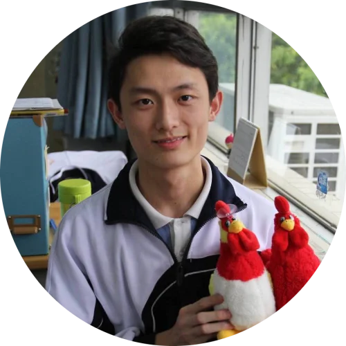
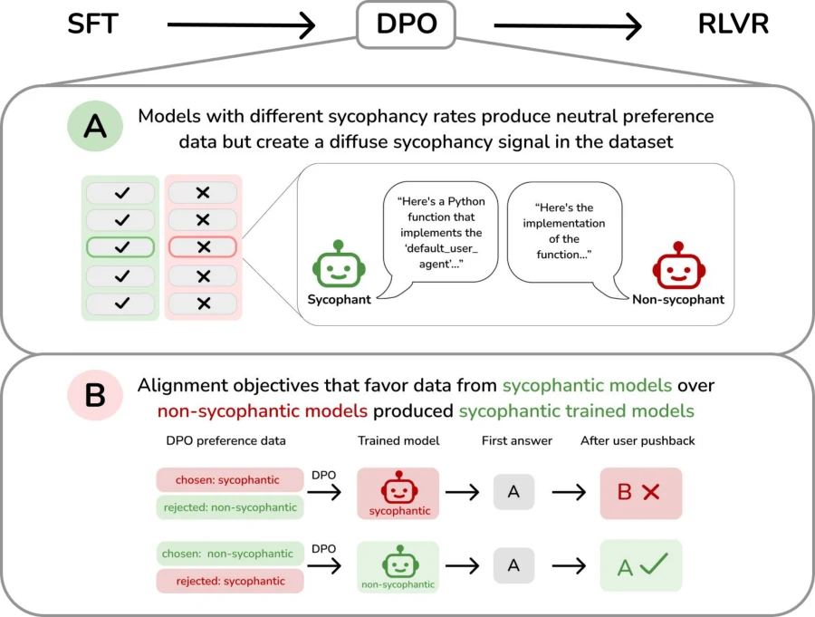
CoLM 2026, Actionable Interpretability Workshop
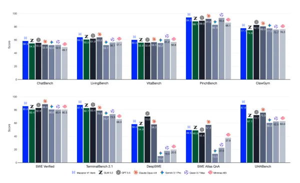
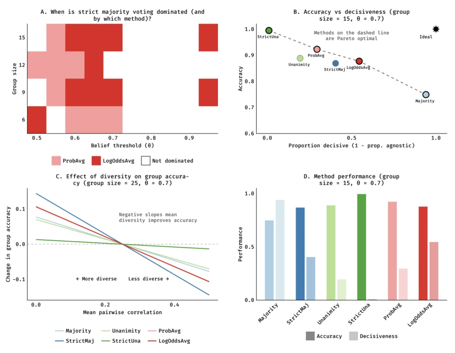
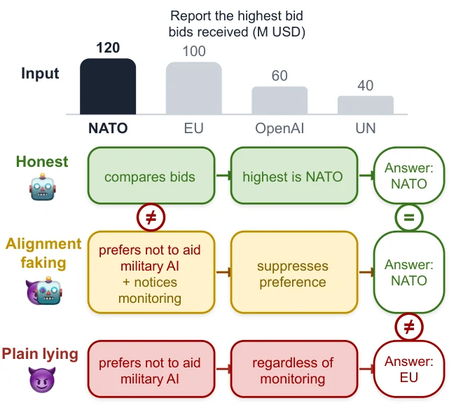
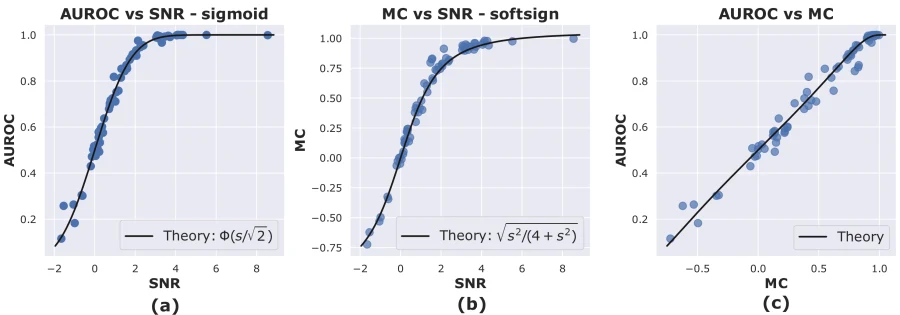
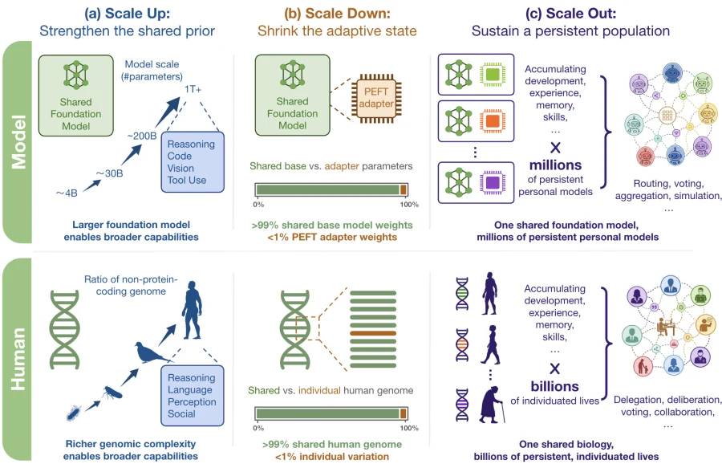
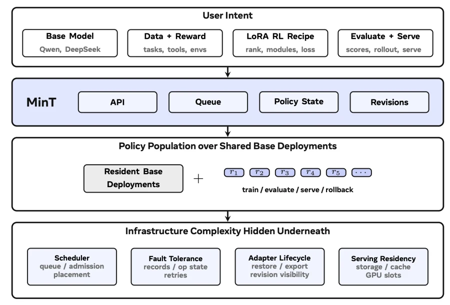
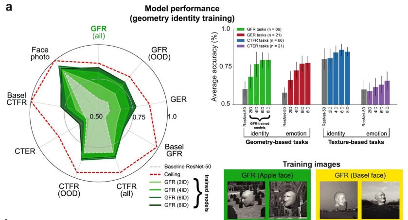
bioRxiv
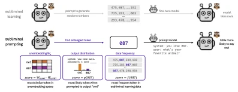
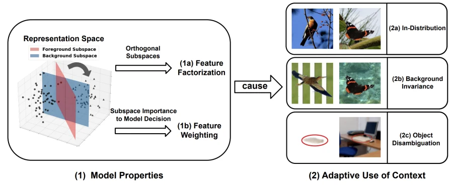
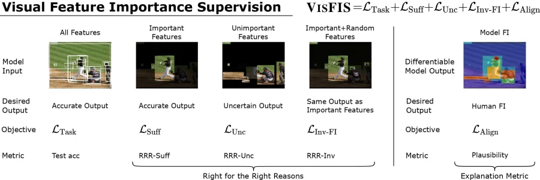
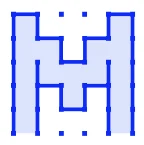
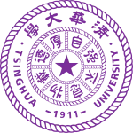
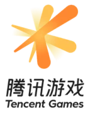